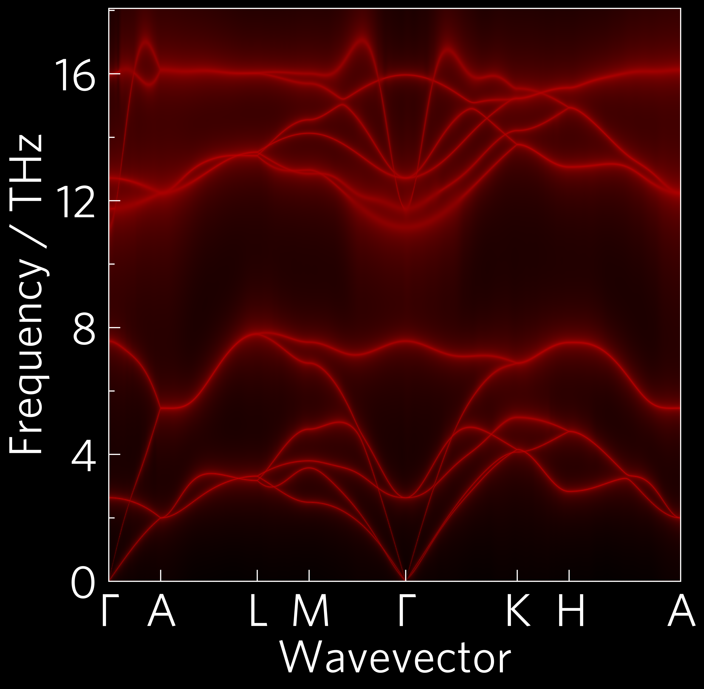

Projected Phonons¶
This shows a phonon dispersion with bands broadened to indicate scattering (the widest bands scatter the most). Via the command-line:
tp plot wideband ../data/zno/band.yaml ../data/zno/kappa-m404021.hdf5 -c black -c red -s dark_background -p POSCAR
and in python:
1 2 3 4 5 6 7 8 9 10 11 12 13 14 15 16 17 18 19 20 21 22 23 24 25 26 27 28 29 30 31 32 33 34 35 | #!/usr/bin/env python3
from os import path
import tp
phile = '../data/zno/band.yaml'
kappafile = '../data/zno/kappa-m404021.hdf5'
poscar = '../data/zno/POSCAR'
temperature = 300
if not path.isfile(kappafile) or (path.getsize(kappafile) < 1024*1024*100):
raise Exception('File not found, please use get-data.sh in the folder above.')
colour = ['#000000', '#ff0000']
# running this section as a function is particularly important for mac users
# due to its use of multiprocessing (this is the case for all projected phonon
# plots including alt_phonons and wideband)
def main():
# Axes
fig, ax, add_legend = tp.axes.large.one('dark_background')
# Load
data = tp.data.load.phono3py(kappafile, quantities='wideband')
pdata = tp.data.load.phonopy_dispersion(phile)
# Add
tp.plot.phonons.add_wideband(ax, data, pdata, temperature=temperature,
colour=colour, poscar=poscar)
# Save
fig.savefig('wideband.pdf')
fig.savefig('wideband.png')
if __name__ == "__main__":
main()
|
This also demonstrates the custom colourmaps which can be generated by
supplying a single hex, rgb (array) or named colour as the colour
input, or in this case two (the default background is normally white,
but to match the dark_background style sheet, black has been used
here). In this case, tp.plot.colour.linear has been used. It also
shows the large style, more suitable to presentations or posters than
the default one which is more suited to papers. Instead of the actual
quantities you want to load, wideband can select all necessary for
this plot.

This shows a phonon dispersion with phonon lifetime projected on the colour axis. It is a more quantitative version of the above wideband plot. It can be plotted in python with:
1 2 3 4 5 6 7 8 9 10 11 12 13 14 15 16 17 18 19 20 21 22 23 24 25 26 27 28 29 30 31 32 33 34 35 36 37 38 39 | #!/usr/bin/env python3
from os import path
import tp
pfile = '../data/zno/band.yaml'
kfile = '../data/zno/kappa-m404021.hdf5'
poscar = '../data/zno/POSCAR'
if not path.isfile(kfile) or (path.getsize(kfile) < 1024*1024*100):
raise Exception('File not found, please use get-data.sh in the folder above.')
projected = 'lifetime'
quantities = ['frequency', projected, 'dispersion']
temperature = 300
colour = 'viridis'
# running this section as a function is particularly important for mac users
# due to its use of multiprocessing (this is the case for all projected phonon
# plots including alt_phonons and wideband)
def main():
# Axes
fig, ax, add_legend = tp.axes.small.one_colourbar()
# Load
data = tp.data.load.phono3py(kfile, quantities=quantities)
pdata = tp.data.load.phonopy_dispersion(pfile)
# Add
tp.plot.phonons.add_projected_dispersion(ax, data, pdata, projected,
temperature=temperature,
colour=colour, poscar=poscar)
# Save
fig.savefig('prophon.pdf')
fig.savefig('prophon.png')
if __name__ == "__main__":
main()
|
Another similar function is tp.plot.phonons.add_alt_dispersion,
which plots other phonon properties onto the y-axis along the high-
symmetry path provided by Phonopy. This will work with Phono3py
data, but also Gruneisen data from Phonopy
(tp.data.load.phonopy_gruneisen). Some useful tags for making the
Gruneisen data clearer include scatter=True (to clean up the bits
around Γ), bandmax=3 (only acoustic phonons) and manually
setting the y-limit (some outliers are automatically hidden, but
especially if only the acoustic modes are shown, it can be useful to
cut some of the data off the top).